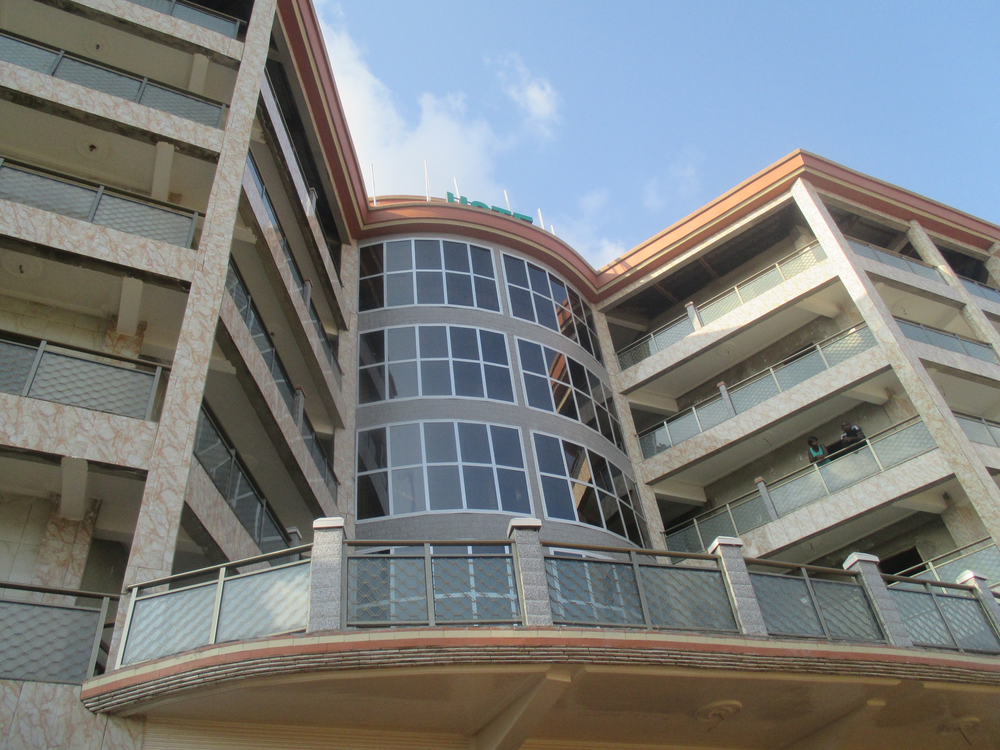
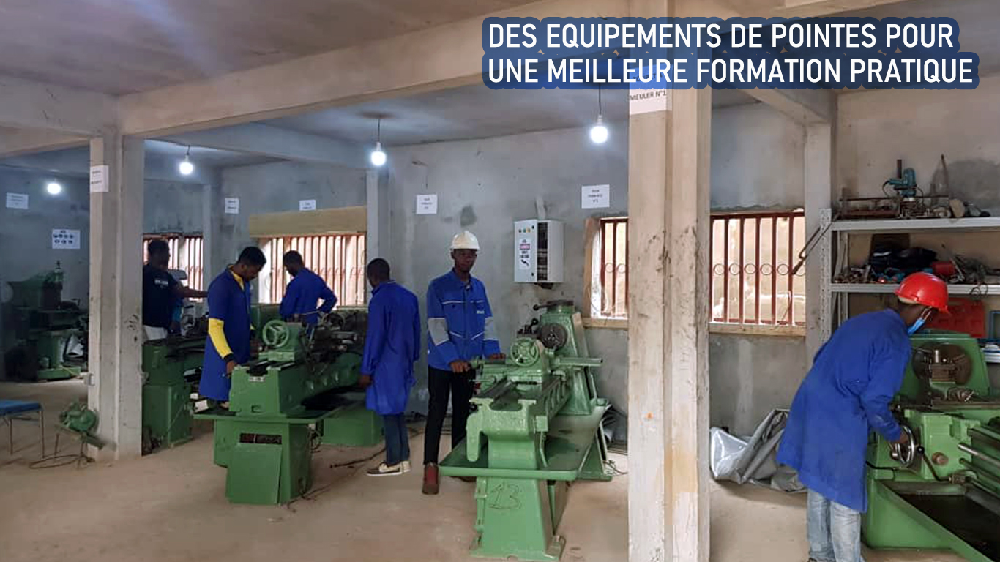
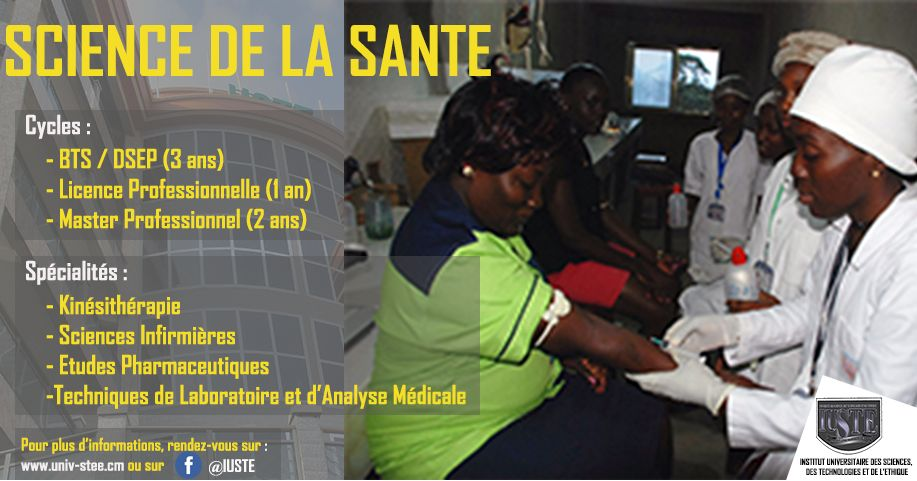
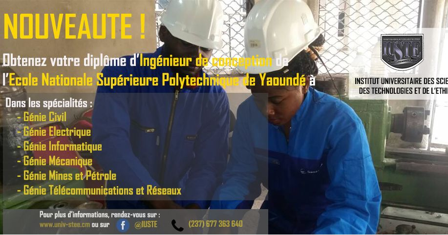
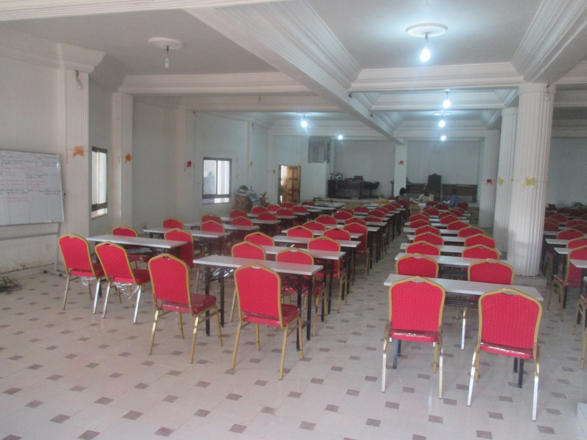

CYCLE COURT
BTS
Un parcours pour acquérir des bases professionnelles solides.
Voir les informations officielles ↗
Un campus, des ambitions, des formations tournées vers la pratique. Découvrez notre proposition de portail académique moderne.
Ce concept de plateforme valorise l’Institut Universitaire des Sciences, des Technologies et de l’Éthique, ses enseignements pratiques, ses formations et l’accompagnement des étudiants.
L’établissement reste seul responsable de ses admissions, de ses programmes et de ses informations officielles.
Découvrir le site officiel ↗
Explorez les cycles évoqués par l’établissement, puis consultez les détails actualisés sur son site officiel.
Un parcours pour acquérir des bases professionnelles solides.
Voir les informations officielles ↗Consolider son expertise avec une approche appliquée.
Voir les informations officielles ↗
Développer une expertise avancée orientée métier.
Voir les informations officielles ↗
Approfondir la conception et la maîtrise de systèmes techniques.
Voir les informations officielles ↗Aucun cycle ne correspond à votre recherche.

Ateliers, travaux pratiques et espaces de formation : des points de repère pour découvrir l’environnement académique.
Ce prototype permet de s'informer, mais ne collecte pas les dossiers ni les inscriptions réelles.
Démarches d’admission officielles ↗Un étudiant consulte uniquement ses résultats publiés. Un enseignant peut saisir, contrôler puis publier les notes de ses cours dans le véritable portail PHP.
Essayez les vues étudiant et enseignant avec des résultats purement fictifs. Aucune donnée personnelle n'est enregistrée ici.
Installez PHP/SQLite, puis démarrez la version dynamique décrite dans la documentation. GitHub Pages ne peut pas exécuter PHP.
Des explications claires sur le fonctionnement du prototype.
Après connexion au vrai portail PHP, il voit uniquement ses notes publiées. Les brouillons et les résultats des autres restent inaccessibles.
Un enseignant ne peut enregistrer et publier des résultats que pour les cours qui lui sont attribués par l’administrateur.
Non. Les candidatures et les renseignements officiels sont à vérifier sur le site de l'établissement.
Non. Il s'agit d'une proposition indépendante développée pour démonstration et apprentissage, sans connexion aux données officielles.
Utilisez le site officiel pour contacter directement l'établissement.